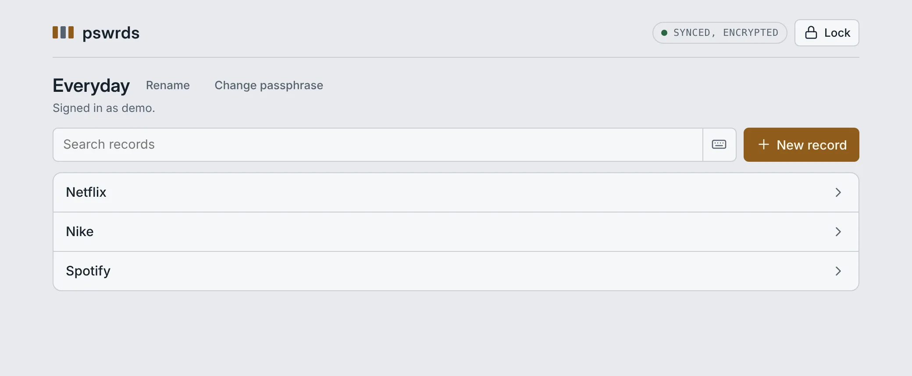
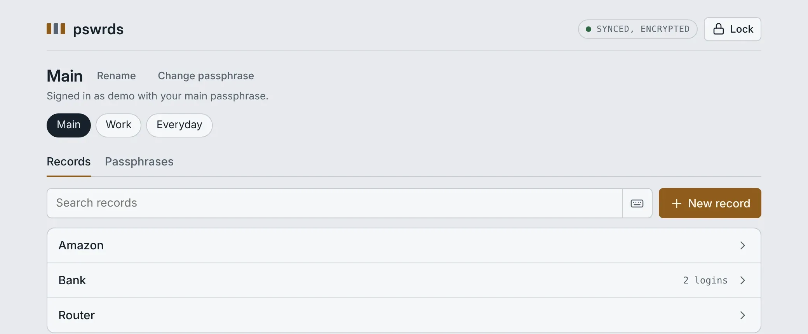
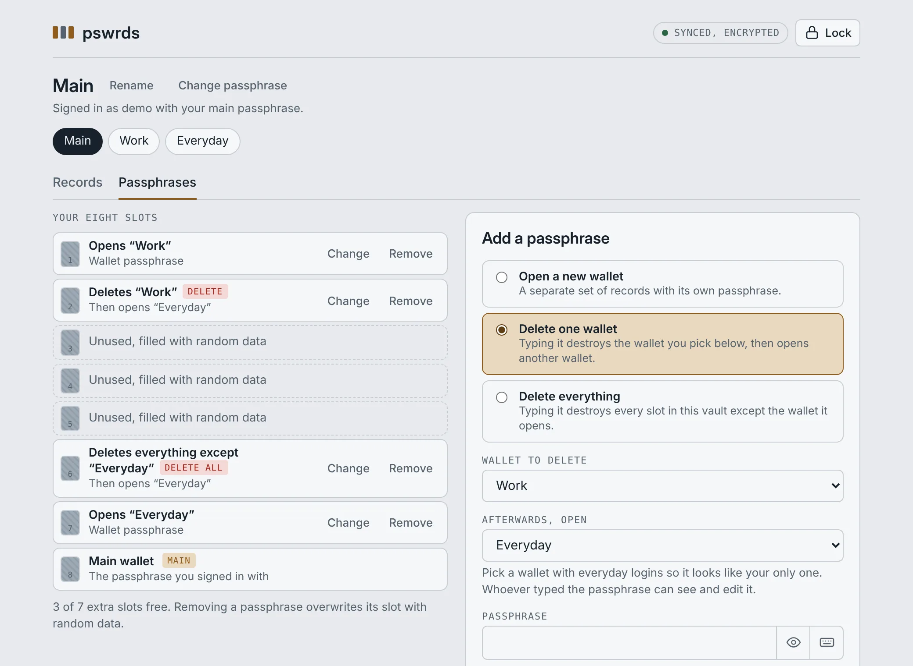
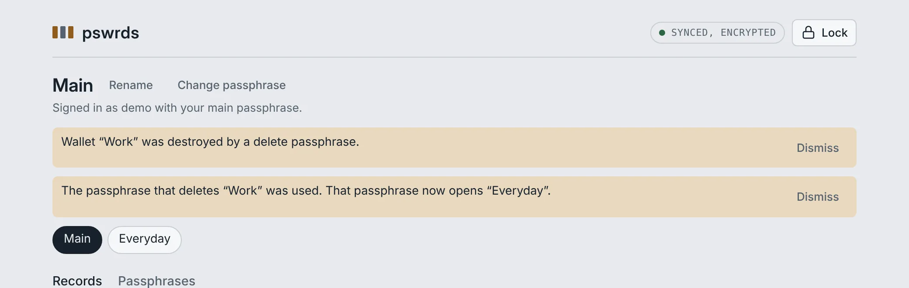

To anyone looking at the screen or the server, a pswrds vault is an ordinary password manager. With an invitation code it becomes a password manager with plausible deniability: several passphrases, each with its own job, hidden wallets that nobody can prove exist, and duress passphrases that quietly destroy data.
The features on this page only work in a vault created with an invitation code. Without one, pswrds is a regular password manager with a single wallet. You enter the code once, when you create the vault, and it can't be added to an existing vault later. Each code can be used only once.
The code isn't saved anywhere on this device. Copy it, or use it right away.
Your browser history will show that you visited this page. If that matters to you, open it in a private window.
Every vault holds eight sealed slots of identical size, with or without an invitation code. Each passphrase unlocks one slot, in your browser. The server stores only scrambled data and cannot tell a wallet from a delete command from an empty slot.
In security terms, a delete passphrase is a duress password, sometimes called a panic password or self-destruct password: you type it when you're forced to unlock, and it does its job without anyone noticing. The wallet it opens is your decoy vault.
Under pressure, give a wallet passphrase or a delete passphrase. Whoever types it sees a normal wallet. A delete passphrase deletes only once. After that, the same passphrase simply keeps opening the wallet it showed.
A delete passphrase protects against someone forcing you to unlock your vault. It can't erase copies that already exist: a copy of the server's database taken earlier, or the hosting company's backups, which can keep deleted data for several weeks.
There is no recovery. If you forget your main passphrase, nobody can open the vault, including us.
For anyone who might one day be coerced into opening their password manager in front of someone else, and for anyone who wants to keep separate parts of their life apart. For example:
Exactly like an ordinary pswrds vault. Signed in with a wallet passphrase, someone sees one wallet with its records, and the same buttons every vault has. There are no tabs, switches or hints that other wallets exist.

Only your main passphrase shows the full picture: a row to switch between your wallets, and a Passphrases tab.

No. Every pswrds vault, with or without an invitation code, has eight encrypted slots of exactly the same size. Unused slots are filled with random data that looks just like an encrypted wallet. Our server, someone with a copy of the database, and someone who has one of your passphrases all see the same eight slots and can't tell which ones are in use, or what they do.
This is what gives you plausible deniability. There is no way to prove that a hidden wallet exists, so nobody can show that the wallet you opened isn't your only one. The idea is similar to the hidden volumes of disk encryption tools such as VeraCrypt, applied to a password manager.
Sign in with your main passphrase and open the Passphrases tab. On the left you see your eight slots and what each one does; on the right, a form to add a passphrase. Choose what it should do, give it a passphrase, and you're done. Each row has Change to give that passphrase a new one, and Remove to overwrite its slot with random data.
A new wallet can start with a copy of another wallet's records: pick it under "Start with records from". That way your everyday logins can live in both your believable everyday wallet and your real one. Later, while viewing any wallet with your main passphrase, Copy to… copies selected records into another wallet. These are copies, not links: changing a password in one wallet doesn't change it in the other.

In the second it takes to unlock, the chosen wallet (or every slot except one) is overwritten with random data, and the wallet you picked opens as if nothing happened. There's no warning, no confirmation and no message. From then on, the same passphrase simply opens that wallet, so typing it again does nothing suspicious.
The next time you sign in with your main passphrase, you see what happened:

A good decoy vault looks like your only one: real, everyday logins such as streaming, shopping, sport and news apps. An empty wallet is possible, but a password manager with nothing in it can look suspicious. Whoever typed the passphrase can see and edit the wallet it opens, so keep nothing sensitive in it.
Some password managers offer a travel mode: before a trip you remove sensitive vaults from your devices and restore them when you're back. That only helps if you switch it on in advance, and only for the trip you planned. With pswrds the decoy vault and the duress passphrase are always ready, wherever you are, and nothing on the screen or the server shows which passphrase was used.
Yes. With your main passphrase, use Change passphrase next to the wallet name for the main passphrase itself, and Change on the Passphrases tab for any other one. Delete passphrases that open a wallet keep working when that wallet's passphrase changes.
Someone who only has a wallet passphrase can change it from inside that wallet too. Your main passphrase then can't open that wallet any more: you'll see a notice, and its slot stays reserved so nothing in it is lost.
One wallet per device can, and never your main passphrase's wallet. Open the wallet, for example the one with Netflix and other everyday logins, press Fingerprint next to its name and confirm. The unlock screen on that device then shows Unlock with fingerprint, which opens that wallet and nothing else. Everything else still needs a passphrase.
If someone forces your finger onto the phone, they get the everyday wallet, which is usually what you'd want. The device does keep a record that it has fingerprint unlock for pswrds, but not what else is in your vault. Changing that wallet's passphrase, or deleting the wallet, turns it off.
Each wallet holds up to 10 records for free. One payment of $20 removes the limit for every wallet in the vault, for life. A wallet opened with its own passphrase shows the same limit and the same upgrade button as any ordinary vault.
That depends on where you are and who is asking. Protecting yourself from a thief or an abuser is one thing. Destroying information that police, customs or a court have lawfully ordered you to hand over can be a crime in itself, often more serious than whatever was in the wallet. Learn the rules that apply to you before you rely on these features. This isn't legal advice.
For everything else, such as the encryption, the on-screen keyboard and payments, see the general questions and answers. Questions about these features: info@pswrds.com.
The demo vault lives in your browser's memory and disappears when you reload. It comes with four passphrases, one of each kind.
Open the demo